Chronomancer
Support and healer; time.
A rare and quiet school that touches time, the last gift of Velin the Hourkeeper. Its masters say little about where they learned it, and some of them seem to remember things that have not happened yet.
Spellbook
Role: Support / Healer · Resource: Mana + Temporal Flux (built by spells, spent on big effects) · Races: Goblins, Forged, The Risen, Bloodkin, Sylvani, Tide-Born, Half-Bloods
Manipulates time to heal wounds by rewinding what happened a few seconds ago, slow enemies down or speed up allies' attacks.
In Orvessa: time magic was a gift from one of the fallen gods, whose name only the chronomancers still remember. Some of them believe that with enough power they could rewind the night Varnhalt died.
| Level | Spell | Effect |
|---|---|---|
| 1 | Time Bolt | Basic attack |
| 4 | Rewind | Heals the damage taken in the last 5 s |
| 8 | Slow Time | Slows a target |
| 10 | Haste | Buff on an ally |
| 14 | Time Dilation | A zone where time runs slowly |
| 18 | Stasis | Freezes a target in time |
| 22 | Temporal Shift | Teleports back to an earlier position |
| 26 | Accelerate | AoE buff, +haste |
| 32 | Time Loop | Repeats your last spell |
| 38 | Age | Ages an enemy, lowering its stats |
| 46 | Reverse Wounds | Mass heal |
| 54 | Echo | Doubles your next spell |
| 60 | Paradox | Ultimate: restores the whole party's health and cooldowns |
Talent trees
- Rewind (healer): Temporal Mending, Healing Echo, Time Flow, Second Chance. Capstone: Reversal.
- Stasis (control): Longer Freeze, Time Lock, Frozen Moment, Entropy. Capstone: Frozen in Time.
- Acceleration (haste, DPS): Quick Cast, Chrono Burst, Temporal Surge, Overclock. Capstone: Time Stop.
Gallery

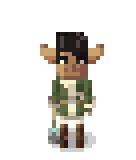

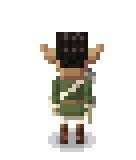

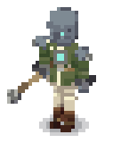

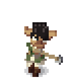

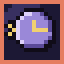

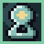

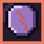

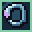

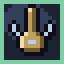

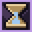

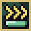

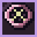